2. ОПРЕДЕЛЕНИЕ ПАРАМЕТРОВ ТРАНСФОРМАТОРА
Для определения коэффициента трансформации п, а также параметров схемы замещения (рис. 18.2) и потерь мощности в трансформаторе проводят опыты холостого хода (опыт ХХ) и опыт короткого замыкания (КЗ) трансформатора.
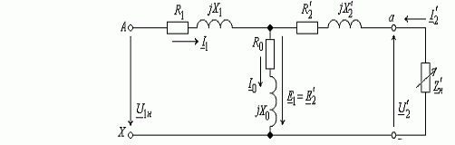
Рис. 18.2. Схема замещения трансформатора:
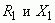 - активное и индуктивное сопротивления первичной обмотки; 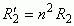 и 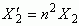- приведенные активное и индуктивное сопротивления вторичной обмотки; 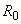- активное сопротивление намагничивающей ветви, обусловленное потерями мощности в стальном магнитопроводе; 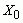- индуктивное сопротивление намагничивающей ветви, обусловленное основным магнитным потоком; 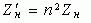- приведенное к числу витков вторичной обмотки сопротивление нагрузки; 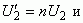 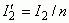 - приведенные вторичное напряжение и вторичный ток
При опыте ХХ к первичной обмотке трансформатора подводится номинальное напряжение (рис. 18.3)
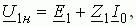
где 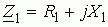 - полное сопротивление первичной обмотки. При этом вторичная обмотка разомкнута (I2 = 0) и напряжение на её зажимах
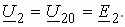

Измерив напряжение U20, ток I0 и активную мощность Рх и пренебрегая падением напряжения на первичной обмотке 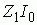 (ввиду его небольшого значения по сравнению с ЭДС E1, определяют:
- коэффициент трансформации
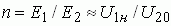;
- параметры намагничивающей ветви схемы замещения трансформатора (см. рис. 18.3, а)
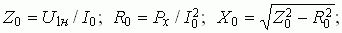
- потери мощности при ХХ, называемые потерями в стали Р0, которые затрачиваются в основном на нагрев магнитопровода от действия вихревых токов и циклического перемагничивания стали, т. е. 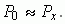
При опыте К3 (рис. 18.4) в отличие от опасного аварийного короткого замыкания трансформатора, возникающего случайно при работе при
напряжении 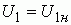, к первичной обмотке подводят такое пониженное напряжение 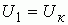 (меньшее напряжения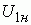 в 8...20 раз в зависимости от типа и мощности трансформатора), при котором в его обмотках устанавливаются токи, равные соответствующим номинальным значениям:
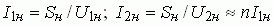,
где Sн - номинальная мощность трансформатора (в В∙А).
Ввиду малости магнитного потока Ф (пропорционального пониженному напряжению Uк) при опыте К3 и соответственно потерь в стали (а они пропорциональны магнитному потоку в квадрате, т. е. Ф2) активная мощность, потребляемая трансформатором из сети, идёт в основном на нагрев обмоток, т. е. равна электрическим потерям (называемыми потерями в меди Рм) в проводах обмоток:
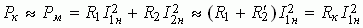.
Измерив напряжение Uк, ток I1н и активную мощность Рк, определяют:
- параметры схемы замещения при КЗ трансформатора (пользуясь упрощенной схемой замещения, рис. 18.4, а):
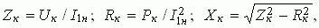
где 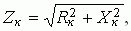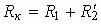 и 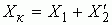 - соответственно полное, активное и реактивное сопротивления К3 трансформатора;
- напряжение К3, выраженное в процентах,
uк (% ) = 100Uк /U1н;
- потери мощности при КЗ трансформатора (потери в меди)
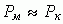.